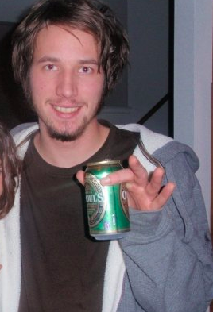

Finasteride is a drug that is used for treatment of an enlarged prostate and mail pattern baldness. It was approved by the FDA in 1992 to treat the former and 1997 to treat the latter.
Finasteride treats these conditions by blocking the metabolism of testosterone into dihydrotestosterone (DHT), which is known to cause enlargement of the prostate and damage hair follicales on the scalp. However, DHT does alot of good things for the male body, and it is not a good idea to mess with it. Because if you do you might develop post finasteride syndrome. And that is the syndrome I either have or think I have, and I haven't yet figured out which one that is, nor which one might be easier to overcome.
On October 17, 2020 I made the worst decision of my life to-date. I began taking the hormone disrupting drug called Finasteride, to treat a practically non-existent harloss issue. The story starts actually a year earlier in 2019. While browsing facebook one day one of its adds popped on to my screen for the online hairloss service called Keeps. Keeps offers its clients the opportunity to get a suite of harloss treatments through its online store and access to virtual doctor consultations that make prescription drugs accessible through the internet. I didn't have a bald spot but had some thinning of my hair that I was beginning to notice, so I decided to signup. Its easy .. you take a few snapshots of your head, upload them to the sight and a few days later a virtual doctor gives you a hairloss diagnosis and suggests a treatment plan.

photos of my hair when I joined Keeps - some thinning, but no bald spot, no mail pattern hairloss signs ... and that was the problem ... But not for Keeps doctor extraordinaire MARC SEROTA

Dr. Marc Serota prescribing the infamous poison (finasteride) to me which I ingested for 2 months in the fall of 2020...
So weeks later, at my doorstep came the harloss drugs. Now you think I just plopped on the rogain and took the finasteride pills, right? Wrong. I did my research on both and was astounded by what I'd read about finasteride. It said it could cause sexual disfunction, like impotence and lowered labido, and a whole array of other terrifying side effects. At that moment i said to myself I wasn't going to touch finasteride, cause I knew that with my paranoia and anxiety that if the drug didn't give me those side effects, my mind would ... I even consulted Serota about my concern and his response did little to reassure me, but perhaps it raised enough doubt in me to make the fateful decision to try it ... amost exactly one year later.

So 2019 and early 2020 continued on rather uneventfully (except for covid) and peacefully. I started applying minoxidil (rogain) once a day, and let the bottles of finastride sit untouched in my bathroom closet. Checkout some snapshots of what life was like in the months leading up to my pharmaceutical nightmare


As I stated earlier I took my first pill of fanasteride on October the 17 -- there were many factors that led me to make this poor decision and I will try to cover the key ones.
As October 2020 rolled around --- keeps ... the diligent online medical service sent an email that it was time for a checkup, and I complied -- uploading fresh photos of my follicles. I even intelligently used the opportunity to tell the 'fine' folks of Keeps that i wanted to switch to just a minoxodil plan, leave out the finasteride thankyou verymuch. So seems like im handling my self quite well in this encounter, right? Then how was it a contributing factor to my decision to take finasteride a week later? Probably because the experience just put the hairloss topic a little closer to my waking assortment of daily thoughts that recieved my attention.

Believe it or not the Summer of 2020 was actually a relatively successful in the dating world for me. I was dating two girls and both of them seemed to like me. Don't get me wrong ... i was not being covid careless. My first three dates with one of the girls was socially distanced, and I only had one socially distanced date with the other .. though we chatted more frequently, playing online chess and texting atleast weekly, starting from before the covid pandemic. However, the one I liked more was the one that dumped me after the 4th date. She sent me a standard lets be friends text on october 17. And it put me in a bad mood, you might even say insecure. Insecurity is a powerful emotion --- might even be strong enough to make a man take a risky medication for a non-existent hairloss issue.
Now Covid is tricky, and its a prickly subject for me ... becuse I've had to endure a support system that keeps attributing my current situation to another soul afflicted with mental disturbance on account of the pandemic. Maybe their right .. but i havent had that appifiny yet. But currently what I can glean is that Covid did affect my hair. I was an extreme rule follower when it came to Covid. And that is why I didn't get a haircut for several months. The long hair looked good but it was hard not to notice. I started to daydream of having a long healthy ponytail. I've heard some chicks dig that. So in a perverted way I thought finasteride might help acheive my Covid tail

Most days of the week I have a couple beers before dinner, but on October 17 I had about 8. Why? I guess because of the rejection message from that girl. I won't blame myself for that. But its hard not to blame myself for making a sadistic and self destructive decision to take finasteride - because there is no way I would have taken that first pill if I was sober. What happened is I was about 6 beers in and I felt I had to make this night mean something more than just a guy getting drunk cause he's sad that a girl doesn't like him. So I thought about taking finasteride ... I said to myself ... I shit you not ... 'Ill never have the guts to start taking this stuff if im sober so I've got to do it now while i've got this liquit courage flooding my brain.' So popped the pill, passed out, and boarded the highway to hell.
There are some horror stories out there where people take one pill of this stuff and wake up the next day with complete erectile and cognitive dysfunction - If you're curious read-away on everybodies favorite place for obsessive and endless discussion on just about any topic that exists - reddit-finasteride-syndrome But that's not what happened to me ... I proceeded to have a shitty rest of October ... but I attributed it to my recent rejection and not the finasteride ... but maybe I was wrong.
I went through november mostly unaware of what finasteride might be doing to me but there were several occurances ... looking back now ... that seem like they may have been the result of ingesting finasteride.
everybody knows the feeling when their blood sugar drops - you get light headed, weak, and shakey. That feeling happens when you haven't eaten for a considerable amount of time. But when it happens more than once in a week, and not after abstaining from food for very long, its a sign somethings our of wack with your body and its mechanisms for processing sugar. This happened to me twice in November. Once on a long drive back from conducting sampling, and once while waling my dog .. in the same week. Turns out finasteride infact adversely affects blood sugar and my body, I think I went through a blood sugar hiccup that week, but instead of looking at a simple solution loke examining postential side effects of meds I was taking, I just worried about possibly having diabetes. Lesson: take a look at your medications and their side effects, early and often, early and often, early and often.

As I stated earlier I typically have a couple beers most days of the week, but to counter that habbit I like to take extended breaks from time to time .. to recalibrate the bodies symptoms of regular alchohol use .. be it moderate or otherwise .. and in 2020 I decided I was going to make the entire month of November alchohol-free. So to get me started I bought a six-pack of Odouls, the well known brand of non-alchoholic. The first or second day after drinking my ration of odouls I experienced a headache ... which was odd because I don't get headaches very often, but I attributed it to some type of preservative or what-not lurking in the bottles of cheaply made non-alchoholic odouls, unfortunately those headaches came and went, if they'd been mor persistent I might have payed more attention to potential causes rather than blaming the easy target, the fine non-alchoholic beverage ... Odouls. But I think I was wrong ... it was finasteride, starting to ravage my brain, body, and manhood.

me in my college days, drinking an odouls ... Their beverages never had caused me headaches before ... yet they did in november 2020 ... or so I thought. I think it was actually finasteride.
december is where shit really started to hit the fan.
on December 1 I woke up with a headache like no other I'd ever experienced. It felt like it was deep in the center of my brain, later id conclude it was in my hypothalimus, where hormones are regulated by nerosteroids. Unlike in November, this headache persisted. And it was on this day that I finally thought i was getting side effects from taking finasteride. Later that week after about three days of the persistent headache I made an appointment with my GP. On the phone her nurse said it would be a good idea for me to come in but to also try clearing out some wax from my ears, as that can frequently be a cause of this type of headache. I tried this and felt immediate relief .. crisis averted .. or so I thought
another thing that happened at the beginning of December was depression set in. One of the key ways I knew this was that I had successfully abstained from alchohol for the entirity of November, so having a couple beers on December 1 should have been something I was looking forward to, a source of accomplishment and pleasure, but it wasn't, and that was an unignorable sign of depression. Despite these two symptoms, headache and depression, that I was suspecting was attributable to side effects from finasteride, I marched on through the month of december quite functionally. But that was not the case for January 2021.
I took my last pill on December 18, 2020. On the evening of December 17 I was feeling agitated, anxious, and depressed. I was about 90% sure at this point I was dealing with finasterite side effects. I had remembered that a week ago I took finasterite while feeling this way and the next day felt better. In retrospect it was like my body was starting to withdraw from the poison by the end of each week and when I would take my pill it would normalize and I would feel better. So that night I took finasteride. The next morning I had my first experience with panic attack immediately upon waking up. I decided to have a couple beers at 7 in the morning to calm myself down. This was a huge mistake. I felt 10 times worse after drinking them and this is when I started to develop my dependency on my family. Up to this point I was a strict rule follower of Covid-19 protocols so I was seeing no one indoors that I didn't live with (with the exception of the girl I dated that summer). But I decided I was getting so bad I had to join my families bubble. That night I spent at my sister's house in lake zurich. I drank and took some valume. And hungout with them. This was the start of me spreading my illness to my family, and their quest to carry me through this began.
 Xmas 2020, putting my best face on
Xmas 2020, putting my best face on